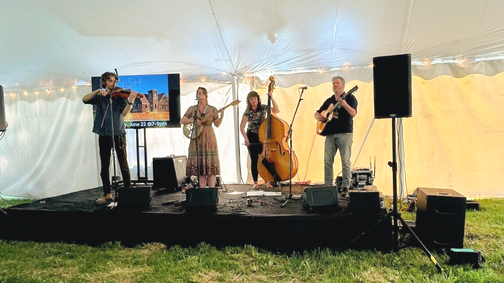
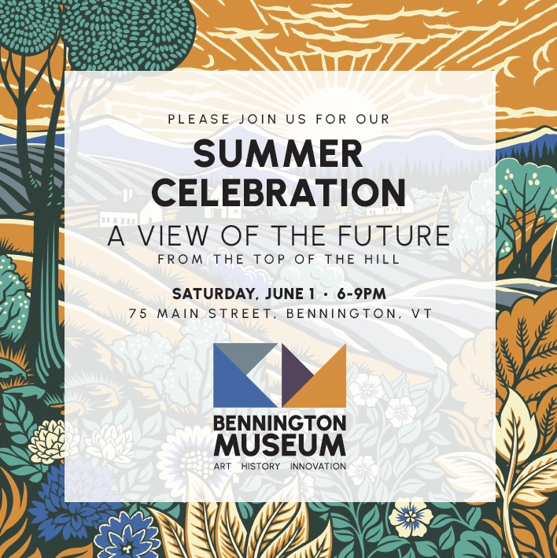
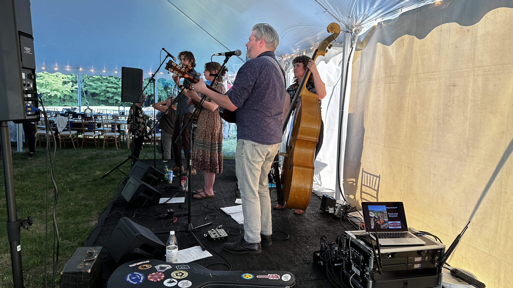

A View of the Future from the Top of the Hill. Live Americana band, outdoor tent, auction. One evening, two registers.
The Bennington Museum named their outdoor summer fundraiser “A View of the Future from the Top of the Hill,” and the evening lived up to it — a tented event on the hill behind the museum with a live Americana band, live and silent auctions, and a crowd of the museum’s supporters. Farm to Fire Hudson BBQ catered. The night needed to work as both a concert and a fundraiser.
The Carolyn Shapiro Band is a four-piece Americana roots act. Outdoor tent mixing means tent reflections, wind on open mics, and a consistent sound image for guests at every angle to the stage. We provided concert sound reinforcement so the band could hear themselves and the audience could hear the set cleanly across the tent.
Auctions ran during the band’s set breaks, switching from live sound to video playback on a 75-inch display for auction items and band information. Transitions were managed live. Uplighting dressed the tent through the evening.
Supporters got both sides of the night without a hard cut between them. That was the goal.


